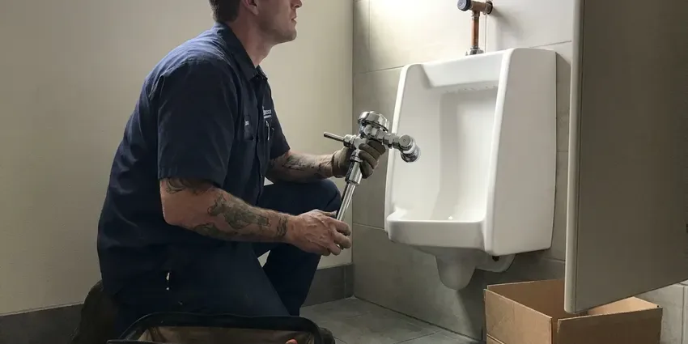

Bathroom Plumbing in Hot Springs, AR
Shower going cold when someone flushes? A pressure-balance cartridge is the usual culprit. DGR Plumbing replaces it in Hot Springs, AR.
- Upfront Pricing
- Leak-Tested Installs
- Toilets, Faucets and Showers
- Parts on Every Truck
Need a Bathroom Plumber Today in Hot Springs, AR?
A dripping faucet adds up on the water bill, so book a visit soon.
Complete Bathroom Plumbing in Hot Springs, AR for Every Fixture
DGR Plumbing knows bathrooms see heavy use and that water quality affects how long fixtures last. Many municipal systems in Arkansas draw from lakes and reservoirs that supply fairly soft water, though some areas see more mineral-heavy water from groundwater sources. Minerals clog cartridges and aerators. Treated water also breaks down rubber flappers, so we repair what makes sense and say so when replacement costs less than more parts.
Work we handle every week:
- Rocking toilet and flange repair
- Shower valve, tub spout and sink drain replacement inside finished walls
- Pressure-balance shower valve installs

Additional Bathroom Plumbing Services in Hot Springs, AR
From toilets to showers, our bathroom plumbing team in Hot Springs, AR handles repairs, installs, and upgrades with tidy, code-compliant work.


Customers
Why Choose DGR Plumbing for Bathroom Plumbing in Hot Springs, AR?
Our plumbers bring years of bathroom work to each call. The aim is one visit, done right, not a patch you'll call about again.
- Trained Plumbers, Our plumbers handle it all, from old two-handle valves to modern digital showers.
- Local Knowledge, We know how local homes were plumbed in Hot Springs, including how local water and soil affect fixtures.
- Licensed and Insured, Our plumbers are licensed, insured and kept current on code and new fixtures.
Citywide Coverage
Bathroom plumbing calls come from every part of Hot Springs. We cover all of them. Older neighborhoods tend to have galvanized supplies and two-handle valves, and newer ones have plastic supply lines and single-handle cartridges, so the trucks stock parts for both.
Experienced Team
Our plumbers have years of bathroom work behind them. They train every year. New fixture lines, digital shower valves and smart toilets come out all the time, and the crew learns them before installing one in your home so there's no guessing on the job.
Safety-First Approach
Your household's safety comes first on every bathroom job. Hot water gets checked. Plumbers follow strict practices, gas lines to water heaters included, and confirm the work meets or beats local rules.
Trusted Certified Hot Springs Plumbing Services Professionals
At DGR Plumbing, we take pride in licensed, certified plumbing services throughout Hot Springs, AR. Those papers on the wall mean something. Our plumbers hold recognized industry credentials, and they follow strict safety and quality rules on every repair, installation and maintenance call we run.
Call Us Now PHCC Plumbing Contractor Recognition
PHCC Plumbing Contractor Recognition Better Business Bureau (BBB) Accreditation
Better Business Bureau (BBB) Accreditation Angi Certified Pro
Angi Certified Pro ISO 9001 Quality Management Certification
ISO 9001 Quality Management CertificationBathroom Plumbing Repairs and Installs in Hot Springs, AR
Toilet Installation and Replacement in Hot Springs, AR
Cracked, wasteful or worn-out toilets are usually better replaced. Removal is included. New WaterSense, comfort-height and wall-hung toilets from TOTO, Kohler and American Standard come with a new wax ring, bolts and supply line.

Faucet Repair and Replacement Options in Hot Springs, AR
Dripping faucets raise the water bill a little every month. The fix is often small. Our plumbers replace cartridges, O-rings and seats on most bathroom faucets, and when a repair isn't worth it, we install a new faucet with new supply lines so the whole connection is leak-free in your bathroom.
Sink Repair and Replacement in Hot Springs, AR
A slow bathroom sink is usually hair and soap in the pop-up. It's a quick fix. Leaking traps and drain nuts get fixed, and cracked sinks get replaced and tied into your existing drain and supplies so the vanity stays dry. Many municipal systems in Arkansas draw from lakes and reservoirs that supply fairly soft water, though some areas see more mineral-heavy water from groundwater sources. Aerators and drains in Hot Springs, AR homes scale up regularly.
Sink Repair and Installation in Hot Springs, AR
Leaking drains, broken pop-ups and failed supply lines are the common sink repairs. We set new sinks as well. Undermount, vessel and pedestal sinks go in with matching faucets and drains, and corroded traps get replaced to stop leaks and smells. Clean, secure connections safeguard your cabinetry.
Shower Repair and Valve Replacement in Hot Springs, AR
Showers that drip, swing hot and cold or won't shut off usually need a new cartridge. Sometimes the whole valve. Cartridges and full valves get replaced, and when the wall must open, we try to work from the back side through a closet or bedroom. We also replace showerheads, diverters and tub spouts.
Toilet Repair and Installation in Hot Springs
A running toilet can waste hundreds of gallons a month. The flapper is usually why. We replace flappers, fill valves and flush valves, reseat a toilet that leaks at the base with a new wax ring, and install new high-efficiency models when the old one is cracked or uses too much water. Every toilet in your Hot Springs home is set solid and level.
Faucet Repair and Replacement in Hot Springs, AR
A dripping faucet wastes water and leaves mineral stains in the basin. Usually it's a worn cartridge. We repair compression, cartridge, ceramic disc and ball faucets, and when the body is corroded or parts are no longer made, we help you pick a replacement and install it with new supply lines. Moen, Delta and Kohler parts are stocked in Hot Springs, AR.

Preventative Maintenance in Hot Springs, AR
Most bathroom plumbing problems give warning signs first. A checkup finds them. We check seals, test pressure and clear minor buildup before it clogs, extending fixture life and catching leaks early. Hot Springs, AR homes benefit most with hard water.
Nearby Bathroom Plumbers in Hot Springs, AR
Local plumbers know local plumbing. The water here matters. Hard water, older galvanized supply lines and the fixture brands common all shape how we repair a bathroom, and that knowledge helps us suggest repairs that last instead of parts that fail in a year.
Searching 'bathroom plumbing near me' in Hot Springs, AR? DGR Plumbing has plumbers working in the area daily. With common parts on board, the plumber can usually finish the repair on the first visit. Most calls are next-day or sooner.
DGR Plumbing at a Glance
- Fully licensed plumbing team covering Hot Springs, AR
- 24/7 emergency service with same-day scheduling
- Clear written estimates, no hidden fees
- 4.8-star rated by 871+ Arkansas customers
Hot Springs Map
Hot Springs Information
- Population
- 37,994
- Area codes
- Local
- Service area
- Hot Springs and communities within 40 miles
- Nearby
- Benton, Little Rock, North Little Rock, Conway
Mineral scale builds up in faucet cartridges, showerheads and toilet fill valves, so bathroom fixtures in Hot Springs, AR sometimes need repair sooner than expected.
Talk to a Plumber
Call DGR Plumbing for honest, reliable plumbing from people who know the trade in Hot Springs, AR.
Our Specialized Plumbing Services in Hot Springs, AR
At DGR Plumbing, you get every kind of plumbing service from one company across Hot Springs, AR. From leak detection to full system installs, our team works fast and charges fair prices on homes and commercial properties alike. Take a look at our core services below:


What to Expect on a Bathroom Plumbing Call in Hot Springs, AR
We keep bathroom plumbing simple, clean and predictable.
Call or Book Online
Call (501) 251-9708 or use the online form. Tell us which fixture is acting up, and we'll set a time for a visit.
Look and Quote
A plumber arrives at your Hot Springs home, finds the cause and explains the fix and the cost before starting.
Fix and Test
Once you approve, we do the work with quality parts and check every connection for leaks.
Frequently Asked Questions About Bathroom Plumbing in Hot Springs
A faucet repair usually runs $150 to $300. Replacements run higher. Replacing a toilet, fixture included, often lands at $400 to $800 based on the model and the flange condition. The estimate comes after diagnosis.
Most fixes take one to two hours. A toilet swap is about two hours. A shower valve is usually a half-day job, longer if we have to open the tiled side of the wall.
Fixture repairs and like-for-like replacements usually do not need a permit. Moving drains, adding fixtures or remodeling often does, and we handle permits when required.
Kohler, Moen, Delta, American Standard, TOTO, Pfister and Grohe cover most of what we see. Parts ride on the truck. Our plumbers know the cartridges, stems and repair kits for each manufacturer, so a repair can usually be done that visit instead of waiting on a special order.
Scale in aerators or showerheads is the most common cause. Regulators fail too. A failing pressure regulator, a leak in the supply line or a problem at the water heater can also drop pressure, and our plumbers test at the fixture and the main to find which one it is.
Many homeowners can replace a simple faucet. Seized stops are the catch. If the shutoff valves are old, the drain leaks or the faucet is wall-mounted, a plumber can save you time and prevent a leak inside the vanity or wall.
Mineral buildup in pipes or showerheads, a failing pressure regulator, a leak in the system or a water heater problem are the usual causes. Many municipal systems in Arkansas draw from lakes and reservoirs that supply fairly soft water, though some areas see more mineral-heavy water from groundwater sources. We test to find which one it is.
Dripping faucets and running toilets top the list. Slow drains too. Weak showers, odd pipe noises and leaks under the sink or around fixtures all deserve a look before they cause damage.
What People Are Saying About Our Plumbing Experts?

Mark T.
The floor drain in our office break room backed up every few weeks. The plumber ran a cable, then put a camera down and found roots at a joint about thirty feet out. Seeing it on the screen made the decision easy.
Drain Cleaning · Hot Springs, ARPaul B.
Our pit pump ran nonstop even in dry weather. The plumber found the check valve was stuck open, so the same water kept cycling back into the pit. New valve, new float switch, done in an hour. It runs quiet now.
Sump Pump · Hot Springs, AR
Nathan E.
Our tankless heater kept throwing an error code and shutting off mid shower. The tech flushed the heat exchanger, which was full of scale, and replaced a bad flow sensor. Hot water has been steady for half a year now.
Water Heater Repair · Conway, AR
Angela D.
Our sump pump quit during a storm and the water was an inch from the basement carpet. DGR Plumbing put in a new pump with a battery backup that same evening. We have had two heavy rains since. It kicked on both times.
Sump Pump · North Little Rock, AR
Robert G.
The camera showed a full break in our clay sewer line near the street. DGR Plumbing replaced it with a trenchless pipe burst, so the only digging was two small pits in the yard. They let us watch the footage before and after.
Sewer Line Replacement · Benton, AR
Jessica T.
We were adding a gas range in a kitchen remodel and needed a new line run from the meter. The plumber pulled the permit, ran the pipe through the crawl space, and had it inspected and approved within the week.
Gas Line Repair · Hot Springs, AR